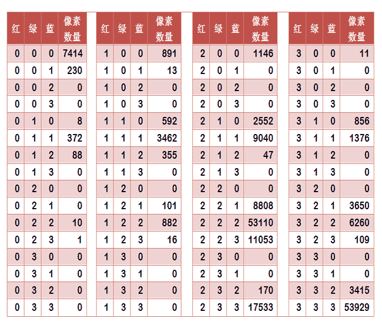
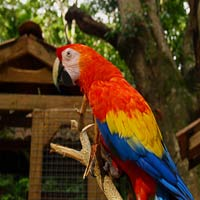
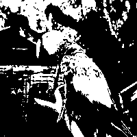
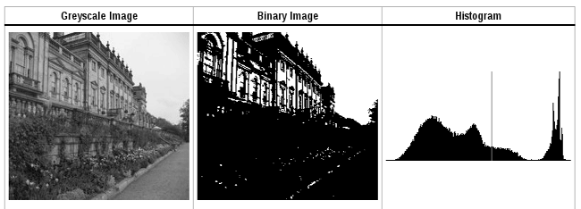

之前工作中需要处理相似图片, 期间尝试过本文中所说的 感知hash, 也尝试过 SIFT, CNN等方法. 先将此文转了备查.
颜色分布法
每张图片都可以生成颜色分布的直方图（color histogram）。如果两张图片的直方图很接近，就可以认为它们很相似。

任何一种颜色都是由红绿蓝三原色（RGB）构成的，所以上图共有4张直方图（三原色直方图 + 最后合成的直方图）。
如果每种原色都可以取256个值，那么整个颜色空间共有1600万种颜色（256的三次方）。针对这1600万种颜色比较直方图，计算量实在太大了，因此需要采用简化方法。可以将0～255分成四个区：0～63为第0区，64～127为第1区，128～191为第2区，192～255为第3区。这意味着红绿蓝分别有4个区，总共可以构成64种组合（4的3次方）。
任何一种颜色必然属于这64种组合中的一种，这样就可以统计每一种组合包含的像素数量。

上图是某张图片的颜色分布表，将表中最后一栏提取出来，组成一个64维向量(7414, 230, 0, 0, 8, …, 109, 0, 0, 3415, 53929)。这个向量就是这张图片的特征值或者叫”指纹”。
于是，寻找相似图片就变成了找出与其最相似的向量。这可以用皮尔逊相关系数或者余弦相似度算出。
内容特征法
除了颜色构成，还可以从比较图片内容的相似性入手。
首先，将原图转成一张较小的灰度图片，假定为50x50像素。然后，确定一个阈值，将灰度图片转成黑白图片。


如果两张图片很相似，它们的黑白轮廓应该是相近的。于是，问题就变成了，第一步如何确定一个合理的阈值，正确呈现照片中的轮廓？
显然，前景色与背景色反差越大，轮廓就越明显。这意味着，如果我们找到一个值，可以使得前景色和背景色各自的”类内差异最小”（minimizing the intra-class variance），或者”类间差异最大”（maximizing the inter-class variance），那么这个值就是理想的阈值。
1979年，日本学者大津展之证明了，”类内差异最小”与”类间差异最大”是同一件事，即对应同一个阈值。他提出一种简单的算法，可以求出这个阈值，这被称为“大津法”（Otsu’s method）。下面就是他的计算方法。
假定一张图片共有$n$个像素，其中灰度值小于阈值的像素为 $n_1$ 个，大于等于阈值的像素为 $n_2$ 个（$ n_1 + n_2 = n$ ）。$w_1$ 和 $w_2$ 表示这两种像素各自的比重。
$w_1 = \frac {n_1} {n}$
$w_2 = \frac{n_2} {n}$
再假定，所有灰度值小于阈值的像素的平均值和方差分别为 $\mu_1$ 和 $\sigma_1$，所有灰度值大于等于阈值的像素的平均值和方差分别为$\mu_2$ 和 $\sigma_2$ 。于是，可以得到
$类内差异 = w_1 \sigma_1^2 + w_2 \sigma_2^2$
$类间差异 = w_1w_2(\mu_1-\mu_2)^2$
可以证明，这两个式子是等价的：得到”类内差异”的最小值，等同于得到”类间差异”的最大值。不过，从计算难度看，后者的计算要容易一些。
下一步用”穷举法”，将阈值从灰度的最低值到最高值，依次取一遍，分别代入上面的算式。使得”类内差异最小”或”类间差异最大”的那个值，就是最终的阈值。具体的实例和Java算法，请看这里。

有了50x50像素的黑白缩略图，就等于有了一个50x50的0-1矩阵。矩阵的每个值对应原图的一个像素，0表示黑色，1表示白色。这个矩阵就是一张图片的特征矩阵。
两个特征矩阵的不同之处越少，就代表两张图片越相似。这可以用”异或运算”实现（即两个值之中只有一个为1，则运算结果为1，否则运算结果为0）。对不同图片的特征矩阵进行”异或运算”，结果中的1越少，就是越相似的图片。
感知哈希算法（Perceptual hash algorithm）
它的作用是对每张图片生成一个”指纹”（fingerprint）字符串，然后比较不同图片的指纹。结果越接近，就说明图片越相似。
下面是一个最简单的实现：
第一步，缩小尺寸。
将图片缩小到8x8的尺寸，总共64个像素。这一步的作用是去除图片的细节，只保留结构、明暗等基本信息，摒弃不同尺寸、比例带来的图片差异。
第二步，简化色彩。
将缩小后的图片，转为64级灰度。也就是说，所有像素点总共只有64种颜色。
第三步，计算平均值。
计算所有64个像素的灰度平均值。
第四步，比较像素的灰度。
将每个像素的灰度，与平均值进行比较。大于或等于平均值，记为1；小于平均值，记为0。
第五步，计算哈希值。
将上一步的比较结果，组合在一起，就构成了一个64位的整数，这就是这张图片的指纹。组合的次序并不重要，只要保证所有图片都采用同样次序就行了。
= 8f373714acfcf4d0
得到指纹以后，就可以对比不同的图片，看看64位中有多少位是不一样的。在理论上，这等同于计算“汉明距离”（Hamming distance）。如果不相同的数据位不超过5，就说明两张图片很相似；如果大于10，就说明这是两张不同的图片。
具体的代码实现，可以参见Wote用python语言写的imgHash.py。代码很短，只有53行。使用的时候，第一个参数是基准图片，第二个参数是用来比较的其他图片所在的目录，返回结果是两张图片之间不相同的数据位数量（汉明距离）。
这种算法的优点是简单快速，不受图片大小缩放的影响，缺点是图片的内容不能变更。如果在图片上加几个文字，它就认不出来了。所以，它的最佳用途是根据缩略图，找出原图。
实际应用中，往往采用更强大的pHash算法和SIFT算法，它们能够识别图片的变形。只要变形程度不超过25%，它们就能匹配原图。这些算法虽然更复杂，但是原理与上面的简便算法是一样的，就是先将图片转化成Hash字符串，然后再进行比较。
以上内容转自 相似图片搜索的原理